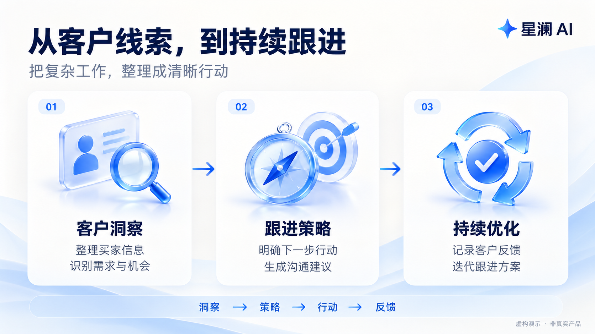
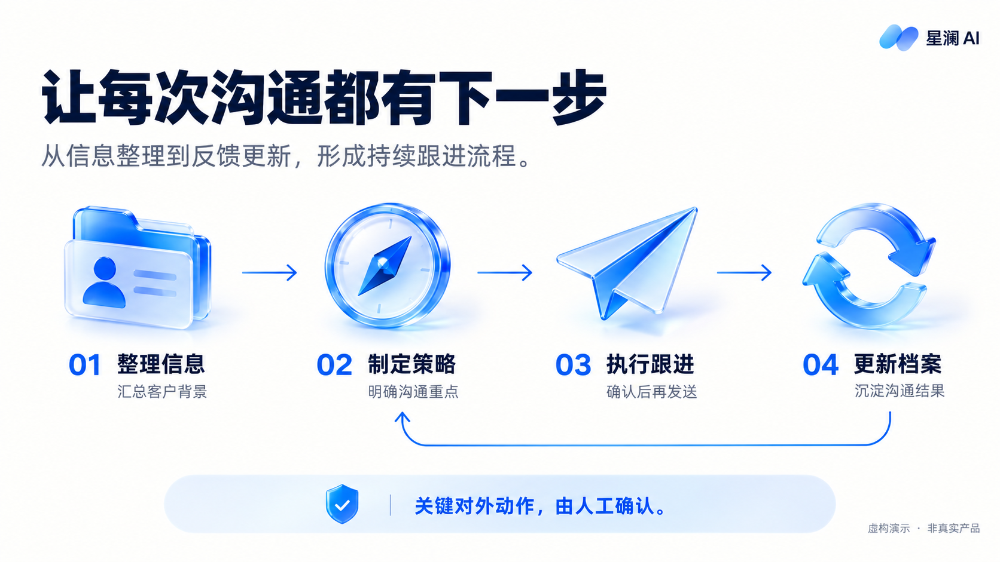

<!doctype html><html lang="zh-CN"><meta charset="utf-8"><meta name="viewport" content="width=device-width,initial-scale=1"><title>星澜 AI · 客户跟进演示</title><style>*{box-sizing:border-box}body{margin:0;background:#101827;color:white;font-family:system-ui}main{height:100vh;display:grid;place-items:center;padding:12px 12px 60px}figure{margin:0;text-align:center;width:100%}figure[hidden]{display:none}img{display:block;margin:auto;max-width:100%;max-height:calc(100vh - 115px);object-fit:contain}figcaption{margin-top:10px;font-size:14px}nav{position:fixed;bottom:12px;width:100%;display:flex;justify-content:center;gap:16px}button{padding:8px 22px;cursor:pointer}</style><main><figure ><figcaption>1 / 5 · 把客户洞察，变成增长行动</figcaption></figure>
<figure hidden><figcaption>2 / 5 · 客户跟进，常卡在三个地方</figcaption></figure>
<figure hidden><figcaption>3 / 5 · 从客户线索，到持续跟进</figcaption></figure>
<figure hidden><figcaption>4 / 5 · 让每次沟通都有下一步</figcaption></figure>
<figure hidden><figcaption>5 / 5 · 从一组客户开始，把跟进做扎实</figcaption></figure></main><nav><button id="prev" aria-label="上一页">上一页</button><button id="next" aria-label="下一页">下一页</button></nav><script>const f=Array.from(document.querySelectorAll('figure'));let p=0;function show(n){p=Math.max(0,Math.min(f.length-1,n));f.forEach((e,i)=>e.hidden=i!==p);document.getElementById('prev').disabled=p===0;document.getElementById('next').disabled=p===f.length-1;history.replaceState(null,'','#slide-'+(p+1))}document.getElementById('prev').onclick=()=>show(p-1);document.getElementById('next').onclick=()=>show(p+1);addEventListener('keydown',e=>{if(['ArrowRight','ArrowLeft',' ','Home','End'].includes(e.key)){e.preventDefault();show(e.key==='Home'?0:e.key==='End'?f.length-1:p+(['ArrowLeft'].includes(e.key)?-1:1))}});show(Number(location.hash.match(/slide-(\d+)/)?.[1]||1)-1);</script></html>